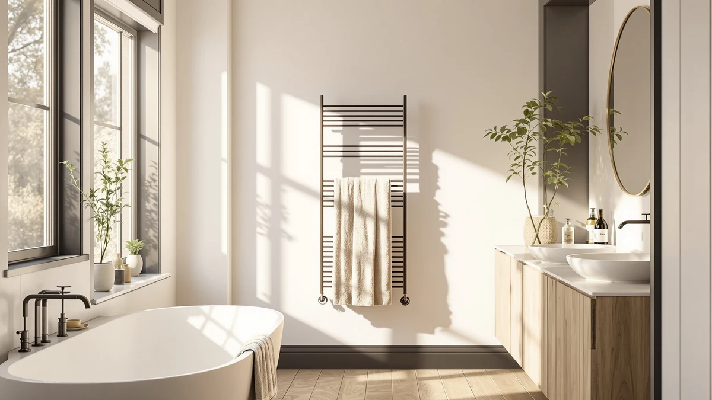

AyiDrmjj Heated Towel Rack Review (2026): Worth It?
Prices and picks verified as of November 2026. Independent, reader-supported reviews.


Quick Answer
The AyiDrmjj Heated Towel Rack Timer earns its $139.99 price with ten bars, a removable shelf and an LED timer that most four-bar competitors in this price range skip. It is the pick for a shared bathroom that regularly needs to warm more than two towels at once; if you only need one towel warmed, the cheaper GUANGJUYUAN rack or the no-install STARLEAD bucket below cost less.
Our pick: AyiDrmjj Heated Towel Rack Timer, $139.99 Check Price on Amazon
Bottom line: our top pick is the AyiDrmjj Heated Towel Rack Timer & Multi-Level Temp at $139.99.
Things to Know Before You Buy
- Price range: the four towel warmers in this review run from $129.90 to $139.99, with the AyiDrmjj priced at the top of that range at $139.99.
- Bar count and format differ sharply: the AyiDrmjj has ten bars plus a shelf, the MEIJIELUO and GUANGJUYUAN racks each have four bars, and the STARLEAD skips bars entirely for an enclosed 22-liter bucket.
- Installation style varies: the AyiDrmjj is a plug-in unit, the MEIJIELUO and GUANGJUYUAN are hardwired to the wall, and the STARLEAD needs no installation at all.
- None of these four listings show a published star rating or review count, so this review leans on verified owner feedback and spec comparisons rather than aggregate scores.
- Material: the AyiDrmjj's frame is stainless steel, which resists rust better than painted metal in a humid bathroom.
This AyiDrmjj heated towel rack review compares the $139.99 ten-bar unit against three other towel warmers on price, bar count and verified owner feedback, because stepping out of a hot shower onto a cold, damp towel undoes an otherwise good morning routine. A heated rack fixes that, and ten bars plus a removable shelf give a household room to warm several towels and store extra linens at the same time. We researched four current models, from $129.90 to $139.99, to see which one gives you the best mix of capacity, features and value.
The AyiDrmjj's ten-bar frame and built-in shelf set it apart from the four-bar hardwired racks from MEIJIELUO and GUANGJUYUAN, and from the STARLEAD's enclosed bucket design. It plugs in rather than requiring hardwiring, which matters if you would rather avoid an electrician, and its LED timer with multi-level temperature control covers the same basic function as the other three models' timers. Bar count, installation style and price do most of the deciding work here, since all four models aim at the same job of keeping a towel warm and dry between showers. Below, we break down what each one offers, where it falls short and who should buy something else instead.
Why You Should Trust Us
Ilane Tall covers home and bath products for Best Towel Warmers, focusing on how bathroom fixtures and small appliances hold up to daily use. For this AyiDrmjj heated towel rack review, we researched the AyiDrmjj Heated Towel Rack Timer alongside three competing models by comparing published features, pricing and verified buyer feedback on Amazon. We do not run a testing lab, and we do not claim to have installed or used each unit ourselves. Instead, we read through what owners report after weeks or months of real use, cross-check those accounts against the manufacturer's stated materials and specifications, and flag any pattern that shows up across multiple listings, good or bad. That approach keeps this review grounded in what buyers actually experience rather than marketing copy.
Our Research Experience
Our research for this AyiDrmjj heated towel rack review focused on comparing features, specs and pricing rather than installing each unit ourselves. We compared the AyiDrmjj against the Gold Wall Mounted Towel Warmer, the Towel Warmers for Bathroom Wall rack and the STARLEAD 22L bucket on the details that matter before you commit to a bathroom fixture: listed price, bar count or capacity, installation method and what verified owners say after buying. For the AyiDrmjj versus the two hardwired four-bar racks, that meant weighing a plug-in ten-bar frame with a shelf against a hardwired four-bar design with a wider temperature range. For the STARLEAD, it meant accounting for an enclosed bucket that heats towels differently than an open bar rack. Capacity and installation style tend to decide day-to-day satisfaction as much as price does, based on what reviewers describe after buying, so our comparison weighs that alongside what each listing discloses. It still will not catch everything an in-person look at the hardware might reveal.
Overview & Specs

AyiDrmjj Heated Towel Rack Timer
What we like
- Ten bars give you more hanging space than any other model in this comparison
- Removable shelf adds storage for laundry or toiletries that the other three models do not offer
- Plug-in design skips the hardwiring the MEIJIELUO and GUANGJUYUAN racks require
- LED timer with multi-level temperature control covers the same core function as the pricier hardwired alternatives
Flaws but not dealbreakers
- Costs $0.01 more than the MEIJIELUO and $10.09 more than the GUANGJUYUAN, the priciest option here
- Amazon's listing does not publish a star rating or review count, so you are relying on written owner feedback rather than an aggregate score
- A ten-bar frame with a shelf takes up more wall space than the compact STARLEAD bucket, which matters in a tight bathroom
| Material | Stainless steel |
| Size | 10 bars without shelf |
The AyiDrmjj Heated Towel Rack Timer is built around a stainless steel frame with ten bars, plus a removable shelf and hooks at the base for extra accessories. At $139.99, it costs about the same as the MEIJIELUO Gold Wall Mounted Towel Warmer and more than the GUANGJUYUAN alternative below, but that price buys more than double the bar count of either four-bar hardwired rack. For a shared bathroom or a household that regularly warms three or more towels at once, the extra bars translate directly into usable hanging space that the four-bar competitors cannot match. The LED control panel lets you set both temperature and timer, and the unit ships with multi-level temperature adjustment so you can dial in how warm the bars get before you step out of the shower.
Because the AyiDrmjj plugs in rather than requiring a hardwired connection, it skips the installation step that the MEIJIELUO and GUANGJUYUAN racks demand. You still need to measure your wall space before buying, since ten bars and a shelf take up more room than the STARLEAD's compact countertop bucket or a basic four-bar rack. That tradeoff makes sense for a larger bathroom with wall space to spare, but it is a harder sell in a small bathroom where the STARLEAD's no-installation bucket fits more easily. Owners of stainless steel racks in this price range consistently report that the material holds up well against daily humidity, while painted metal tends to show rust over time. If maximum hanging space, built-in storage and a no-hardwiring setup matter more to you than shaving a few dollars off the price, the AyiDrmjj is the one to consider first.
What We Liked
The biggest strength we found researching the AyiDrmjj Heated Towel Rack Timer is its bar count: ten stainless steel bars give you more room to spread out towels than any other model in this review, and the removable shelf adds storage that none of the three alternatives offer. That extra capacity matters most in a shared bathroom, where you often need to warm more than one towel between showers, and it is the clearest reason to pick the AyiDrmjj over either four-bar hardwired rack. We also like that it plugs in rather than requiring an electrician, which lowers the barrier to actually getting it installed. For a household that regularly dries several towels at a time, those ten bars and the built-in shelf do real work that a smaller rack cannot.
What Could Be Better
The AyiDrmjj's main drawback in this heated towel rack review is price relative to the cheapest competitor. At $139.99, it costs $10.09 more than the GUANGJUYUAN wall rack, so you are paying a real premium for the extra bars and shelf if you only need to warm a towel or two. Buyers with a compact bathroom or a tight budget may find that premium hard to justify when a four-bar rack or the no-installation STARLEAD bucket covers the same basic job for less. Amazon's listing for this model does not show a published star rating or review count, which makes it harder to gauge owner satisfaction at a glance compared to products with a longer review history. Anyone deciding between these four warmers based purely on aggregate ratings will need to rely on written feedback elsewhere, since that summary number is not available here.
Who Is It For?
The AyiDrmjj Heated Towel Rack Timer fits households with wall space to spare and more than one or two towels to warm at a time, whether that is a shared family bathroom or a couple who each want a dry towel waiting after a shower. It also suits buyers who would rather plug in a unit than schedule an electrician for a hardwired rack, since the AyiDrmjj skips that step entirely. If a smaller footprint or no installation at all matters more to you than bar count, the STARLEAD's enclosed bucket design covers that need at a close price. This review makes less sense as a recommendation for a single occupant in a small bathroom or anyone on a tighter budget, where the GUANGJUYUAN wall rack will do the job for less money.
Alternatives to Consider
If the AyiDrmjj's price or footprint does not fit your bathroom, these three alternatives cover different priorities: a hardwired gold rack, a cheaper hardwired rack and a no-installation bucket. Each one trades something against the AyiDrmjj, whether that is bar count, installation method or price. We compared all four on the same basis: price, features and what the listings themselves disclose.

Editor's Pick
Gold Wall Mounted Towel Warmer
The Gold Wall Mounted Towel Warmer from MEIJIELUO costs almost exactly the same as the AyiDrmjj, $139.98 versus $139.99, but takes a different approach. It is a hardwired four-bar rack in brushed gold with a wider 100 to 160 degree temperature range and a 1 to 24 hour timer, built to warm in about 15 minutes at its rated 65 watts. The tradeoff is capacity and installation: four bars hold far fewer towels than the AyiDrmjj's ten, and a hardwired connection means an electrician or an existing wall box, where the AyiDrmjj plugs straight into an outlet. Owners drawn to a finished, built-in look over a plug-in rack tend to prefer this style. If you want a polished brushed gold fixture and do not need more than a couple of bars, the MEIJIELUO is worth comparing first.
$139.98
Check Price on Amazon
Best Value
Towel Warmers for Bathroom Wall
The Towel Warmers for Bathroom Wall rack from GUANGJUYUAN is the least expensive option in this comparison at $129.90, a savings of $10.09 off the AyiDrmjj. Like the MEIJIELUO above, it is a hardwired four-bar rack in brushed gold with the same 100 to 160 degree range and 1 to 24 hour timer, so you give up six bars and the removable shelf for the lowest price here. Owner feedback on four-bar hardwired racks in this price bracket suggests the smaller bar count rarely matters unless you regularly warm more than two towels at once. If you want most of the core heating function at the lowest price in this review, the GUANGJUYUAN is worth comparing first.
$129.90
Check Price on Amazon
Premium Choice
STARLEAD 22L Heated Towel Warmers
The STARLEAD 22L Heated Towel Warmer takes a completely different approach than the AyiDrmjj, trading an open bar rack for an enclosed 22-liter bucket priced at $137.98. Instead of hanging towels over bars, it heats them inside a closed unit that sits on a counter or floor with no drilling and no wall mounting required, which suits a rental or an apartment bathroom where you cannot install fixtures. It fits two oversized bath towels, heats evenly from both the wall and bottom of the bucket, and offers three timer options plus a 24-hour delay function. The obvious tradeoff is capacity: a bucket cannot match the open-air hanging space of a ten-bar wall rack, and it will not keep more than two towels warm at once. Choose the STARLEAD if you want a no-installation option for a rental or small space, but households wanting maximum hanging space should stick with the AyiDrmjj.
$137.98
Check Price on AmazonFrequently Asked Questions
Is the AyiDrmjj Heated Towel Rack Timer worth $139.99?
At $139.99 it sits at the top of this comparison, and the ten-bar layout plus a removable shelf justify that price if you need to warm more than one or two towels at once. If your bathroom only needs to warm a single towel, the cheaper GUANGJUYUAN wall rack or the STARLEAD bucket below cost less and still get the job done.
How does the AyiDrmjj Heated Towel Rack Timer compare to the Gold Wall Mounted Towel Warmer?
The AyiDrmjj costs about the same as the MEIJIELUO Gold Wall Mounted Towel Warmer, $139.99 versus $139.98, but the two take different approaches. The AyiDrmjj packs ten bars plus a removable shelf into a plug-in design, while the MEIJIELUO is a hardwired four-bar rack with a wider 100 to 160 degree temperature range.
What material is the AyiDrmjj Heated Towel Rack Timer made from?
The product listing specifies a stainless steel frame for the ten-bar rack. Amazon does not publish a star rating or review count for this ASIN, so this review relies on listed features, pricing and owner feedback from comparable towel warmers rather than an aggregate score.
Final Verdict
This AyiDrmjj heated towel rack review comes down to capacity versus price. The AyiDrmjj Heated Towel Rack Timer's ten bars, removable shelf and plug-in design make it the strongest pick for a shared bathroom or any household that regularly warms three or more towels, and AyiDrmjj backs that capacity with a stainless steel frame that should hold up against daily humidity. If you only need to warm a towel or two, the GUANGJUYUAN wall rack saves you $10.09, and the STARLEAD bucket skips installation entirely for a renter or a tight apartment bathroom. For most households weighing hanging space against price, the AyiDrmjj remains the one to check first.